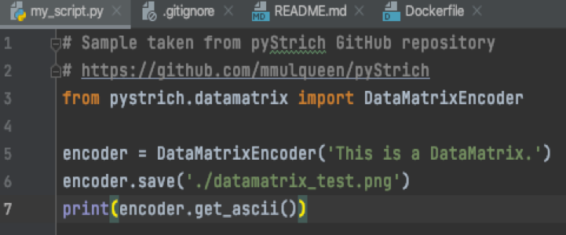
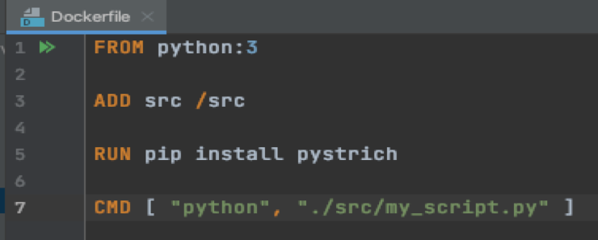
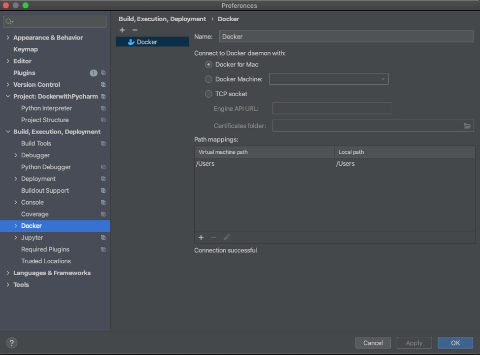
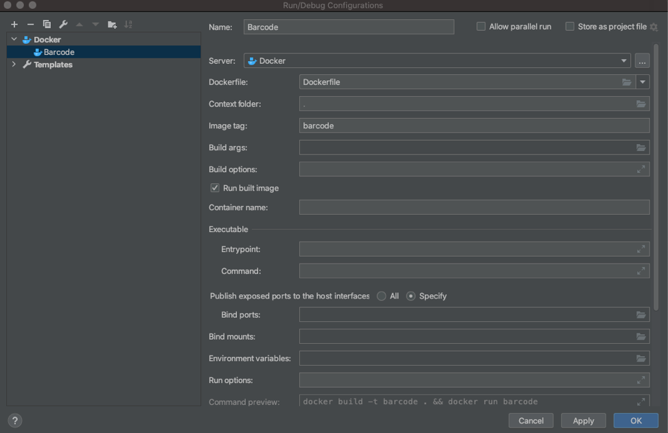
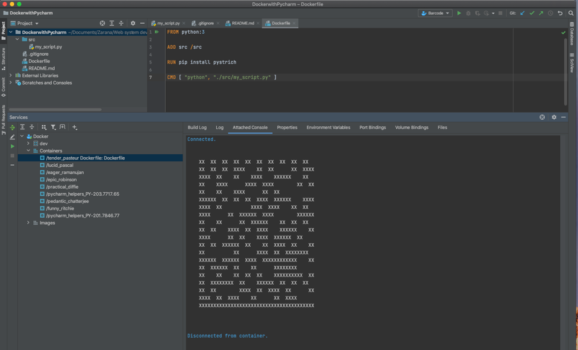

A tutorial about how to connect Docker with Pycharm to write python code
In this tutorial, we will show you how to configure docker in Pycharm so you can develop python application and create container for it. First, we will introduce the prerequisites and show you the links to complete them. Then we will show you how to configure docker in Pycharm and an example will follow to illustrate the run of docker in Pycharm.
Pre-requisites:
• Docker is installed, as described on the page Docker Docs.
You can install Docker on the various platforms.
• Install the PyCharm Pro IDE (https://www.jetbrains.com/pycharm/).
• You have a stable Internet connection.
• Before you start working with make sure that the Docker plugin is enabled. The plugin is
bundled with Pycharm and is activated by default. If the plugin is not activated, enable it on the
Plugins page of the Settings/Preferences dialog.
Tutorial:
1. Create a new project and add the my_script.py file into the /src directory and enter the following code:

2. Create a new file and name it Dockerfile. Put the following codes into the Dockerfile:

3. Open Pycharm and go to ‘Preferences->Build Execution and Deployment->Docker’
Click on ‘+’ to add a new docker connection
Click ‘OK’ to exit the window

4. You need to click on "Add Configuration" in the top right of the IDE to add a Docker configuration. From there click on the "+" button and then click on the "Docker" dropdown. Afterwards, click on "Dockerfile" and a configuration window should appear. Fill out the directory you want to configure and the name of the Docker image. After that make, sure to check off the box that says "Run built image". When all of this is done, click "apply" and "ok".

5. Now run configuration in PyCharm to execute the python script we created, using the python interpreter running on a Docker image instead of using a local interpreter.

Congratulations! You have successfully created and executed your first python program on Docker using Pycharm.